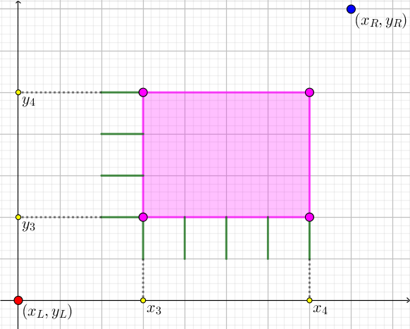

给定坐标平面上三个矩形 $\left[ X_1, X_2 \right] \times \left[ Y_1, Y_2 \right], \left[ X_3, X_4 \right] \times \left[ Y_3, Y_4 \right], \left[ X_5, X_6 \right] \times \left[ Y_5, Y_6 \right]$。
求有多少种方案，在三个矩形中各选一个整点，设为 $A, B, C$，然后选择一条从 $A$ 到 $B$ 的 $\texttt{HV}$ 格路以及从 $B$ 到 $C$ 的 $\texttt{HV}$ 格路。
定义两个方案不同，如果 $A, B, C$ 中至少一个不同，或 $A, B, C$ 相同的情况下某一条格路不同。
第一行包含六个正整数 $X_1, X_2, X_3, X_4, X_5, X_6$ ($1 \leq X_1 \leq X_2 < X_3 \leq X_4 < X_5 \leq X_6 \leq 10^6$)，分别表示三个矩形的端点横坐标。
第二行包含六个正整数 $Y_1, Y_2, Y_3, Y_4, Y_5, Y_6$ ($1 \leq Y_1 \leq Y_2 < Y_3 \leq Y_4 < Y_5 \leq Y_6 \leq 10^6$)，分别表示三个矩形的端点纵坐标。
输出一行一个整数，表示方案的总数模 $10^9 + 7$ 的结果。
为了方便起见，先考虑只有两个矩形的情况，即选择 $A \in R_1, C \in R_3$，统计 $A \to C$ 的 $\texttt{HV}$ 格路数。
由基本(er)的(xiang)组(shi)合(xi)计(shu)数(de)技(ding)巧(yi)，知答案等于 $$ \sum_{i=X_1}^{X_2} \sum_{j=Y_1}^{Y_2} \sum_{u=X_5}^{X_6} \sum_{v=Y_5}^{Y_6} \binom {u - i + v - j} {u - i} $$
固定 $i, j, u$，可以发现能进行上指标求和：即 $\displaystyle \sum_{v=Y_5}^{Y_6} \binom {u - i + v - j} {u - i} = \binom {u - i + \left( Y_6 + 1 \right) - j} {u - i} - \binom {u - i + Y_5 - j} {u - i}$。
同理，对其余三个求和指标均进行上指标求和 (注意利用对称恒等式)，可以将其转化为 $16$ 个二项式系数的代数和：\begin{align*} \sum_{i=X_1}^{X_2} \sum_{j=Y_1}^{Y_2} \sum_{u=X_5}^{X_6} \sum_{v=Y_5}^{Y_6} \binom {u - i + v - j} {u - i} &= \binom {\left( X_6 + 1 \right) - \left( X_1 - 1 \right) + \left( Y_6 + 1 \right) - \left( Y_1 - 1 \right)} {\left( X_6 + 1 \right) - \left( X_1 - 1 \right)} - \binom {\left( X_6 + 1 \right) - \left( X_1 - 1 \right) + Y_5 - \left( Y_1 - 1 \right)} {\left( X_6 + 1 \right) - \left( X_1 - 1 \right)} - \binom {X_5 - \left( X_1 - 1 \right) + \left( Y_6 + 1 \right) - \left( Y_1 - 1 \right)} {X_5 - \left( X_1 - 1 \right)} + \binom {X_5 - \left( X_1 - 1 \right) + Y_5 - \left( Y_1 - 1 \right)} {X_5 - \left( X_1 - 1 \right)} \\ &- \binom {\left( X_6 + 1 \right) - \left( X_1 - 1 \right) + \left( Y_6 + 1 \right) - Y_2} {\left( X_6 + 1 \right) - \left( X_1 - 1 \right)} + \binom {\left( X_6 + 1 \right) - \left( X_1 - 1 \right) + Y_5 - Y_2} {\left( X_6 + 1 \right) - \left( X_1 - 1 \right)} + \binom {X_5 - \left( X_1 - 1 \right) + \left( Y_6 + 1 \right) - Y_2} {X_5 - \left( X_1 - 1 \right)} - \binom {X_5 - \left( X_1 - 1 \right) + Y_5 - Y_2} {X_5 - \left( X_1 - 1 \right)} \\ &- \binom {\left( X_6 + 1 \right) - X_2 + \left( Y_6 + 1 \right) - \left( Y_1 - 1 \right)} {\left( X_6 + 1 \right) - X_2} + \binom {\left( X_6 + 1 \right) - X_2 + Y_5 - \left( Y_1 - 1 \right)} {\left( X_6 + 1 \right) - X_2} + \binom {X_5 - X_2 + \left( Y_6 + 1 \right) - \left( Y_1 - 1 \right)} {X_5 - X_2} - \binom {X_5 - X_2 + Y_5 - \left( Y_1 - 1 \right)} {X_5 - X_2} \\ &+ \binom {\left( X_6 + 1 \right) - X_2 + \left( Y_6 + 1 \right) - Y_2} {\left( X_6 + 1 \right) - X_2} - \binom {\left( X_6 + 1 \right) - X_2 + Y_5 - Y_2} {\left( X_6 + 1 \right) - X_2} -\binom {X_5 - X_2 + \left( Y_6 + 1 \right) - Y_2} {X_5 - X_2} + \binom {X_5 - X_2 + Y_5 - Y_2} {X_5 - X_2} \end{align*}
接下来考虑由三个矩形的情况。
此时，不妨假设我们固定了 $\left( x, y \right) \in \left[ X_3, X_4 \right] \times \left[ Y_3, Y_4 \right]$，那么只需对两侧 (左下方和右上方) 的矩形分别做一个二维部分和，同理可以使用上指标求和转化为四个二项式系数。
于是我们可以将问题看成：左下角的矩形集合可以等价于 $4$ 个 (带权的) 点，每个点有系数 $\pm 1$，同理，右上角的矩形也可以等价于 $4$ 个 (带权的) 点，每个点有系数 $\pm 1$。
从而，我们将原问题转化为 $16$ 个 (反正是 "常数" 个) 下列问题：
给定起点 $\left( x_L, y_L \right)$，终点 $\left( x_R, y_R \right)$ 和一个中途矩形 $\left[ x_3, x_4 \right] \times \left[ y_3, y_4 \right]$，求有多少种方案在 $\left[ x_3, x_4 \right] \times \left[ y_3, y_4 \right]$ 中选一个点 $P$，并选择一条从 $\left( x_L, y_L \right)$ 到 $P$ 的 $\texttt{HV}$ 格路以及一条从 $P$ 到 $\left( x_R, y_R \right)$ 的 $\texttt{HV}$ 格路。
首先，我们考虑计算经过矩形 $\left[ x_3, x_4 \right] \times \left[ y_3, y_4 \right]$ 的格路数：
这个统计较为容易，注意到任何一条经过某个矩形的格路至少经过这 $\left( x_4 - x_3 + 1 \right) + \left( y_4 - y_3 + 1 \right)$ 条边之一，如下图中的绿边：
于是，我们只需枚举它经过了哪一条 "绿边"，然后计算这条绿边的终点到 $\left( x_R, y_R \right)$ 的 $\texttt{HV}$ 格路数即可。
那现在并不只是「经过 $\left[ x_3, x_4 \right] \times \left[ y_3, y_4 \right]$ 的格路」的数量，而是要求经过矩形中特定的点的格路数。
那么我们反过来考虑对于每条经过 $\left[ x_3, x_4 \right] \times \left[ y_3, y_4 \right]$ 的格路，考虑它经过了矩形 $\left[ x_3, x_4 \right] \times \left[ y_3, y_4 \right]$ 中多少个点，如果经过了 $c$ 个点，那么它对最终的答案 (方案数) 就会贡献 $c$ 次，对应于这 $c$ 个点中每一个点都会被计入一次。
因此，我们现在需要统计，对于每条「经过 $\left[ x_3, x_4 \right] \times \left[ y_3, y_4 \right]$ 的格路」，将它们在 $\left[ x_3, x_4 \right] \times \left[ y_3, y_4 \right]$ 中的长度求和。
那么，设第一次经过矩形 (到达时) 是在坐标 $\left( x_a, y_a \right)$，最后一次经过矩形 (离开时) 是在坐标 $\left( x_b, y_b \right)$，那么整条格路在 $\left[ x_3, x_4 \right] \times \left[ y_3, y_4 \right]$ 中的长度就等于 $\color {fuchsia} {\left( x_b - x_a \right) + \left( y_b - y_a \right) + 1}$。
考虑对上面这个粉色式子求和，可以发现并不是很容易，因为起点数，终点数均为 $O \left( n \right)$，那么同时枚举又会达到无法接受的 $O \left( n^2 \right)$ 了。
然而，我们在刚才枚举 "绿边" 的过程中，同时也确定了起点，那么如果整个式子只和起点有关那就好多了！
想啥呢，怎么可能只和起点有关 不过，这虽然不可能，但是注意到我们的式子中是求和，因此可以考虑使用分离变量法 —— 即把 $\left( x_b - x_a \right) + \left( y_b - y_a \right) + 1$ 拆成 $\left( x_b + y_b + 1 \right) - \left( x_a + y_a \right)$，然后在起点处统计 $- \left( x_a + y_a \right)$，在终点处统计 $\left( x_b + y_b + 1 \right)$。
没错，就是这样！从而我们只需分离地枚举起点和终点，将算出的贡献总和相加，就解决了长度求和我的问题。
最后将这个子问题做 $16$ 遍 (注意不要抄错了)，就得到了原问题的答案 (有那么点容斥的感觉)，时间复杂度 $O \left( n \right)$ (其中 $n$ 为坐标范围)。
#include <bits/stdc++.h>
#define y1 y1_
typedef long long ll;
const int N = 2000054, mod = 1000000007;
int x1, x2, x3, x4, x5, x6;
int y1, y2, y3, y4, y5, y6;
int fact[N], finv[N];
ll PowerMod(ll a, int n, ll c = 1) {for (; n; n >>= 1, a = a * a % mod) if (n & 1) c = c * a % mod; return c;}
void init() {
int i;
for (*fact = i = 1; i < N; ++i) fact[i] = (ll)fact[i - 1] * i % mod;
--i, finv[i] = PowerMod(fact[i], mod - 2);
for (; i; --i) finv[i - 1] = (ll)finv[i] * i % mod;
}
inline ll Ct(int a, int b) {return (ll)fact[a + b] * finv[a] % mod * finv[b] % mod;}
int solve(int xL, int yL, int xR, int yR) {
int x, y, ret = 0;
for (x = x3; x <= x4; ++x)
ret = (ret - Ct(x - xL, y3 - yL - 1) * Ct(xR - x, yR - y3) % mod * (x + y3)) % mod,
ret = (ret + Ct(x - xL, y4 - yL) * Ct(xR - x, yR - y4 - 1) % mod * (x + y4 + 1)) % mod;
for (y = y3; y <= y4; ++y)
ret = (ret - Ct(x3 - xL - 1, y - yL) * Ct(xR - x3, yR - y) % mod * (x3 + y)) % mod,
ret = (ret + Ct(x4 - xL, y - yL) * Ct(xR - x4 - 1, yR - y) % mod * (x4 + y + 1)) % mod;
return ret + (ret >> 31 & mod);
}
int main() {
ll ans = 0; init();
scanf("%d%d%d%d%d%d%d%d%d%d%d%d", &x1, &x2, &x3, &x4, &x5, &x6, &y1, &y2, &y3, &y4, &y5, &y6);
ans = (ll)solve(x1 - 1, y1 - 1, x5, y5 )
- solve(x1 - 1, y1 - 1, x5, y6 + 1)
- solve(x1 - 1, y1 - 1, x6 + 1, y5 )
+ solve(x1 - 1, y1 - 1, x6 + 1, y6 + 1)
- solve(x1 - 1, y2, x5, y5 )
+ solve(x1 - 1, y2, x5, y6 + 1)
+ solve(x1 - 1, y2, x6 + 1, y5 )
- solve(x1 - 1, y2, x6 + 1, y6 + 1)
- solve(x2, y1 - 1, x5, y5 )
+ solve(x2, y1 - 1, x5, y6 + 1)
+ solve(x2, y1 - 1, x6 + 1, y5 )
- solve(x2, y1 - 1, x6 + 1, y6 + 1)
+ solve(x2, y2, x5, y5 )
- solve(x2, y2, x5, y6 + 1)
- solve(x2, y2, x6 + 1, y5 )
+ solve(x2, y2, x6 + 1, y6 + 1);
ans %= mod, ans += ans >> 63 & mod;
printf("%d\n", (int)ans);
return 0;
}
坑1：在统计子问题的过程中，其实最终答案的系数还是很有规律的：取决于你选择的左/下个数是奇数还是偶数。
坑2：、在粉色式子 $\left( x_b - x_a \right) + \left( y_b - y_a \right) + 1$ 中不要忘记最后的 $+ 1$，需要放到起点或终点 (至少一个地方) 处去统计。